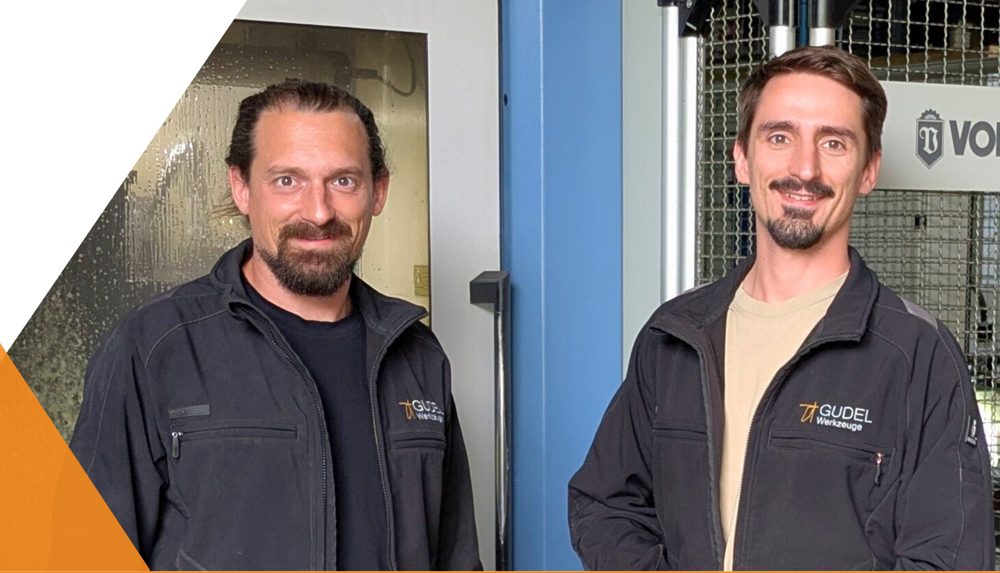
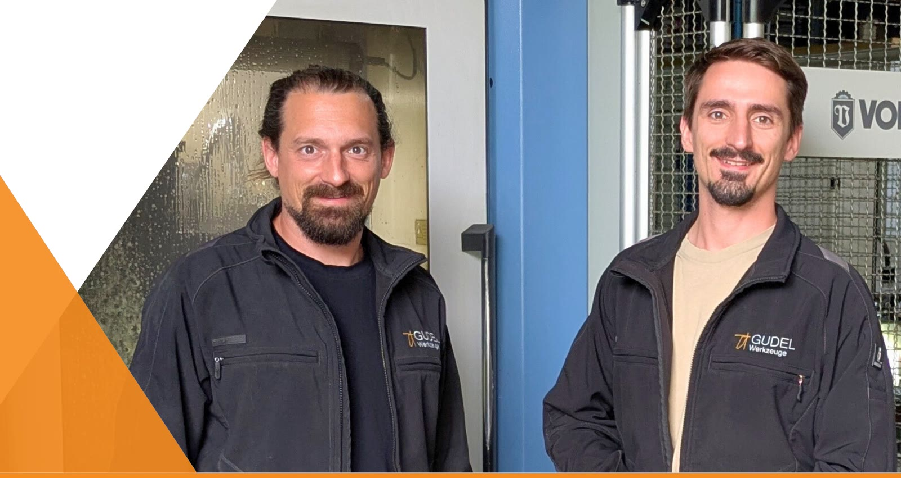

Niederrhein · Münsterland · Ruhrgebiet
Rückruf anfordernDrei Vorteile

Christian und Jan Bernd Gudel
Wir führen Gudel Werkzeuge gemeinsam. Als Präzisionswerkzeugmechaniker-Meister sind wir Ihre direkten Ansprechpartner – von der technischen Abstimmung bis zur Rücklieferung.
Unsere Leistungen
Sägeblätter, Fräser, Bohrer, Hobelmesser sowie PKD- und Diamantwerkzeuge schärfen wir in unserer eigenen Werkstatt. Sonderwerkzeuge fertigen wir nach Bedarf neu an.